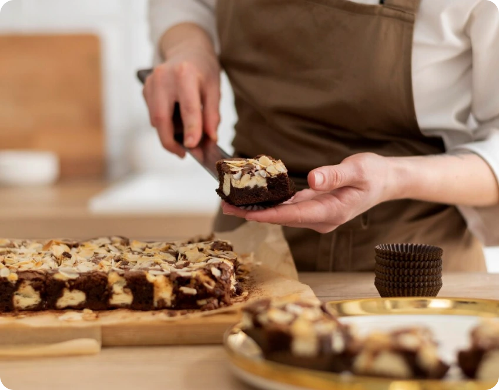
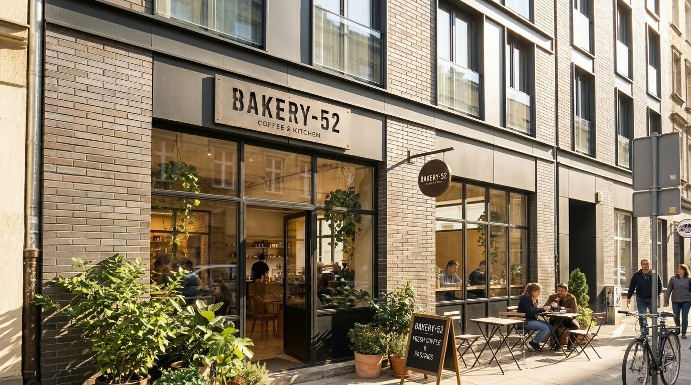

Bringing our vision to life
“My mission is to ensure every guest feels the warmth of home, artisanal quality, and creative passion in every detail.”

Early morning ovens, wild-yeast sourdough, and a neighborhood table on Expo 5252.
Bakery-52 began in a modest test kitchen with a single jar of sourdough starter and a straightforward idea: bake real bread and laminated pastries early enough that they are still warm when the doors open at 9:00 AM. Over time, that small counter grew into our corner bakery and espresso bar in Astana.
Everything in our display case is made from scratch—no boxed bakery mixes, artificial flavors, or shelf-life improvers. Prep begins at 5:00 AM with cultured butter, unbleached stone-ground flour, fresh cream, Belgian chocolate, and seasonal fruit. Our sourdough loaves ferment slowly in cold proofing boxes for 24 to 36 hours so the crumb stays open and tender while the crust bakes crisp and blistered.
Alongside daily rye loaves, cinnamon rolls, and flaky butter croissants, our pastry team builds layered honey cakes, berry drip cakes, and custom bento boxes for birthdays and family dinners. We focus on light sponge textures and balanced sweetness so every slice finishes cleanly instead of feeling overly sugary.
Our coffee bar runs beside the ovens for a reason: freshly roasted Arabica beans dialed in each morning for espresso, flat whites, and filter brews that cut cleanly through warm pastry. Whether you stop in for ten minutes before work or stay at a window table all afternoon, our kitchen is set up for regular neighbors as much as special occasions.
A glimpse around our kitchen, display counter, and dining space.



“My mission is to ensure every guest feels the warmth of home, artisanal quality, and creative passion in every detail.”
“Every dessert tells a story. I pour dedication and artistry into balancing delicate textures with authentic, unforgettable flavors.”
“Great bread takes patience and honest craft. Baking fresh sourdough and golden flaky croissants every morning is my true passion.”
“Through our passion for specialty beans and custom roasting profiles, I ensure every guest enjoys the perfect morning cup.”